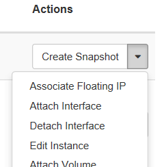
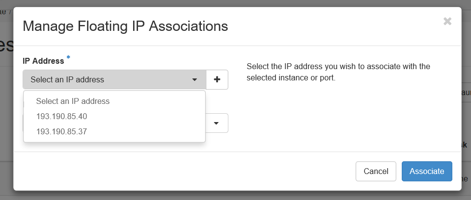

Configure access and security for instance#
The security and accessibility of your cloud resources is governed by a few different aspects, which we discuss more detail in the following sections:
-
Instances must connect to the project's _vm network in order to get external internet access (see section _vm, _vsc and _nfs networks).
-
Each cloud project can use one floating IP, a public IP address which you'll need to link to the resources you want to access. Optionally, if the project has requested access to VSC network it will receive also three VSC floating IPs (see section floating IP addresses).
-
By default, the UGent firewall blocks most IP addresses and ports. Only the port (TCP) range 50000-60000 for the public floating IP addresses is open by default. Contact cloud@vscentrum.be if you need to access other ports from the outside world.
-
The OpenStack environment has its own internal firewalls, which block most ports of your instances by default. If you want to access specific ports of your instances, you must create "Security Groups" which allow access to those ports (see section security groups).
-
You can use one or more SSH keys from your VSC account to access your instances (see section SSH key pairs).
For other access methods, or SSH authentication for a wider set of users, you'll need to set up some form of identity management yourself. This system administration task is beyond the scope of our tutorial.
The _vm, _vsc and _nfs networks#
Each project in the VSC cloud has its own network <projectname>_vm
and --- if the project uses shares and/or vsc networks ---
<projectname>_nfs and <projectname>_vsc respectively. Each
is a subnet of 254 addresses, with an ip range 10.10.x.0/24, where x
is a number that depends on the project and network. To see the subnets
for your project's networks, open the Network tab, and select Networks.
Instances should use the _vm network for communication, and the _nfs network if they need access to shared file systems (see chapter shared file systems). On the other hand _vsc network is used to connect to or provide VSC services via VSC network and floating or dedicated project's VSC IPs. When an instance is created in OpenStack and connected to the _vm, _nfs or _vsc networks, it is automatically assigned a fixed local IP address in that network. This IP address is permanently associated with the instance until the instance is terminated.
Floating IP addresses#
The _vm, _nfs and _vsc networks can only be reached from within the OpenStack environment. If you need to access an instance from the outside, you need to use one of your project's floating IP addresses, which are public IP addresses (193.190.80.0/25 IPs for _vm network) or VSC IP addresses (172.24.48.0/20 IPs for _vsc network). Unlike fixed IP addresses, floating IP addresses can have their associations modified at any time, regardless of the state of the instances involved.
Warning
Do not release the floating IPs assigned to your project. The floating IPs are fixed to the project and it is not possible, as regular user, to re-allocate floating IPs. Please contact to VSC Tier1 Cloud support if you have released your project's floating IPs by mistake.
This section explains how to make your instance accessible via a public IP address by two different methods. The preferred method for _vm network is to use port forwarding to access multiple instances using the same public IP address, but you can also use a "floating IP association" for quick tests or _vsc network.
Floating ip port forwarding#
OpenStack's networking API, called Neutron, makes it possible to forward different ports of the same floating ip to arbitrary ports in one of OpenStack's virtual networks. This is the recommended way to use floating ip's in the VSC cloud. For the floating IP's available in the VSC Cloud, the high port range 50000-60000 is open to the outside world, so it is most convenient to work with ports from this range. Contact if you need public access to another port for a specific ip address.
You'll need to forward a separate port for every service you wish to reach. For example, if you want to access an instance using SSH, you'll need to create a port forwarding rule from a selected port of the floating IP, to the port in the _vm network where your instance's SSH server is listening (typically port 22).
You can quickly set up such forwarding rules using Terraform. We provide several examples to generate automatically several port forwarding rules to access to your VMs via SSH and port 22. You can also include more rules for more external ports.
It is also possible to set port forwarding rules using OpenStack client (only recommended for testing purposes). Please refer to OpenStack client documentation for more information
Associate a floating ip#
A floating IP address can also be associated to an instance, just like the fixed IP addresses. Because this approach uses one of the few available floating ip addresses for every instance you want to connect to, you should only use it for testing purposes with _vm network or with _vsc network.
If you want to use a floating ip for port forwarding as in the previous section, it cannot be associated to an instance at the same time.
Use the following procedure to associate that address with a specific instance.
-
Open the Network tab.
-
Click the Floating IPs tab, which shows the floating IP addresses allocated to your project.
-
In the Floating IPs list, click Associate next to the address you want.
-
In the Manage Floating IP Associations dialog box, choose the following options:
-
IP Address This field is filled automatically.
-
Port to be associated Select a port from the list. The list shows all the instances with their fixed IP addresses.
-
-
Click Associate.
Another way to associate a floating IP is after the user has already launched an instance which appears in the list of running instances in the Project->Compute->Instances tab:
-
Expand the drop-down menu on right next to the instance
-
Select Associate Floating IP

-
A pop-up window will appear and under IP Address select from the drop-down menu an IP address from the available pool.

-
Click Associate
If the IP has been successfully associated in the upper right corner of the browser screen will appear a green confirmation. If not successful a red notification will pop up that something went wrong.
To disassociate an IP address from an instance, click the Disassociate button in the Actions column.
Do not use the Release Floating IP option in the Actions column or on the overview page. This will remove the floating IP from the pool assigned to your project, something which you, as a regular user, cannot undo. If you've accidentally released a floating IP, contact to have it restored.
Security Groups#
OpenStack security groups are sets of IP filter rules that define networking access. You can then assign one or more security groups to your instances.
In the VSC cloud, each project contains a default security group, which allows you to ping instances and connect using SSH on the default port 22. If you want to access other ports on your instances, create new security groups with the appropriate rules and assign them to the instances.
SSH key pairs#
When an instance is launched, OpenStack can automatically install a public SSH key on it, so as to give anyone with the corresponding private key admin access. For this "key pair injection1" to work, the image that the instance is based on must contain the cloud-init package, or have in place another mechanism in place that will interact with the OpenStack metadata server to install the appropriate key. For general instructions on SSH keys, we refer to section Getting an HPC Account of our introduction to HPC.
If you have generated a key pair with an external tool, you can import it into OpenStack. The key pair can be used for multiple instances that belong to a project. For more information, see section [import a key pair]](#import-a-key-pair).
The public keys from your VSC account are automatically available in your VSC Cloud projects, so you can immediately inject one of your existing into your instances. Of course, you can also import new keys into OpenStack, which are not coupled to your VSC account. If you want to give other parties SSH access to VM's, you must manage the keys using some other method. upload SSH keys for other users to your VSC account.
Every OpenStack user account has its own collection of SSH keys for every project. To share a public key between multiple users of the same project, each user needs to import it in the OpenStack project.
Add a key pair#
-
Open the Compute tab.
-
Click the Key Pairs tab, which shows the key pairs that are available for this project.
-
Click Create Key Pair.
-
In the Create Key Pair dialog box, enter a name for your key pair, and click Create Key Pair.
-
Respond to the prompt to download the key pair.
-
Save the *.pem file locally.
-
To change its permissions so that only you can read and write to the file, run the following command:
chmod 0600 yourPrivateKey.pem
Note
If you are using the OpenStack Dashboard from a Windows computer, use PuTTYgen to load the *.pem file and convert and save it as *.ppk. For more information see the WinSCP web page for PuTTYgen, and chapter 2 of the introduction to HPC at VSC.
- To make the key pair known to SSH, run the ssh-add command.
ssh-add yourPrivateKey.pem
Import a key pair#
-
Open the Compute tab.
-
Click the Key Pairs tab, which shows the key pairs that are available for this project.
-
Click Import Key Pair.
-
In the Import Key Pair dialog box, enter the name of your key pair, copy the public key into the Public Key box, and then click Import Key Pair.
The Compute database registers the public key of the key pair.
The OpenStack Dashboard lists the key pair on the Key Pairs tab.
-
The OpenStack documentation and interfaces consistently refer to "SSH pairs", but of course only the public key of each pair is stored in the OpenStack environment, while the private key should be kept secure by the owner. ↩